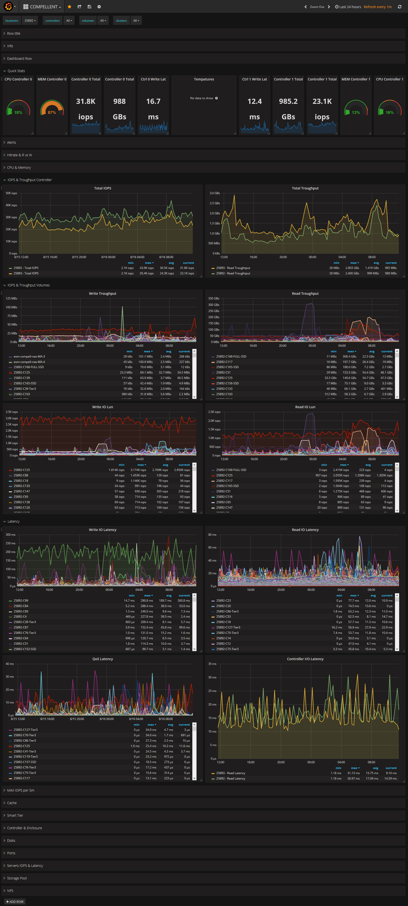

MonitorMySAN
Introduction
MonitorMySAN est un dashboard évolutif basé sur InfluxDB et Grafana pour monitorer le SAN de production (Compellent).
Les métriques sont récupérées en PowerShell depuis l'API REST fournie par DELL et injectées dans des bases Influx.
Le connecteur Influx va envoyer les métriques dans le dashboard Grafana (template de plusieurs graphs).
Environnement
- Debian 9.5
- InfluxDB
- Grafana
- Visual Studio Code
- REST API for Dell Storage
- MkDocs + Python3
- MkDocs Themes
Installation
Une fois InfluxDB et Grafana installés (cf docs ci-dessus), on démarre les services.
Démarrage automatique des services au reboot du serveur :
Grafana
systemctl daemon-reload
systemctl start grafana-server
systemctl status grafana-server
systemctl enable grafana-server.service
InfluxDB
systemctl daemon-reload
systemctl start influxdb
systemctl status influxdb
systemctl enable influxdb.service
Configuration
PowerShell
Une fois Visual Studio Code installé et l'API REST installée, il faut établir une connexion aux contrôleurs SAN Compellent.
L'archive de l'API REST de Compellent contient aussi un fichier PowerShell nommé DellStorage.ApiCommandSet.psd1.
C'est le fichier de l'API qui regroupe toutes les Commandlets.
Il faut faire un appel à ce fichier au chargement du script, sinon, aucune commande de l'API ne sera reconnue.
Import-Module "C:\Users\rudy.guyennot\Documents\SCRIPTING\PowerShell\Storage\DellStorage.ApiCommandSet.psd1"
Note: Le hash des mots de passe est fortemment recommandé.
L'utilisation de la fonction "ConverTo-SecureString" facilite le hash de fichiers.
Se référer à la doc Microsoft : ConvertTo-SecureString PowerShell method
Extrait du script de connexion :
####################################
# DATA COLLECTOR CONNECTION
####################################
#On initie la connection au DataCollector (STOREADM)
$passDC = ConvertTo-SecureString (Get-Content C:\Users\rudy.guyennot\Documents\SCRIPTING\PowerShell\Storage\creds\DataCollector_passwd.txt)
$connDC = Connect-DellApiConnection -HostName "10.66.xx.xx" `
-User "Admin" `
-Password $passDC `
-Save "DataCollector" -Default
A partir de là, lorsqu'on charge le script, on est connecté au Data Collector sur STOREADM.
On peut alors interroger les contrôleurs à travers l'API et récupérer les valeurs.
La doc de l'API est fournie dans l'archive (cf lien ci-dessous) :
Les scripts PowerShell sont découpés en 3 branches :
- master
- preprod
- dev
Ils sont disponibles ici : MonitorMySAN\resources\scripts.
InfluxDB
Un prompt Influx est accessible en local port 8086 sur le serveur via la commande influx.
Création d'une base
root@givememetrics:~# influx
Connected to http://localhost:8086 version 1.6.1
InfluxDB shell version: 1.6.1
> CREATE DATABASE compellent
> quit
Affichage des bases
> SHOW DATABASES
name: databases
name
----
_internal
compellent
> quit
Grafana
Par défaut, Grafana écoute sur le port HTTP 3000. L'utilisateur et le mot de passe par défaut est admin.
Le portail nous invite alors a modifier le mot de passe du compte admin.
On arrive sur la page d'accueil du portail. On peut maintenant ajouter une Data Source.
Se référer à la doc de Grafana Adding data source
Informations de connexion à InfluxDB :
Name: compellent
Type: InfluxDB
Url: http://localhost:8086/
Database: compellent
User: admin
Password: ********
Lorsqu'on clique sur Save & Test une notification s'affiche en vert pour valider la connexion.
A partir de là on peut ajouter un nouveau dashboard. Le plus simple est d'importer un template déjà fait.
Un template au format JSON est disponible dans MonitorMySAN\resources\grafana_templates.
Mise en route
Récupération et insertion des métriques dans Influx
Le script contient une fonction par type de métrique, qui correspond à un élément distinct qui compose le stockage SAN.
Une métrique peut être de plusieurs types :
- contrôleur
- chassis
- disque
- iops
- latence
- ...etc
Exemple d'une fonction qui récupère le nom et le modèle des chassis rattachés à Dell Storage Manager :
function get-ListChassis ()
{
$chassis = @{}
$ListControlers = Get-DellScController -Connection $connDC
foreach ($controler in $ListControlers) {
$name = $controler.Model.Name
$name = $name.substring(3)
$chassis.Add([string]$controler.HardwareSerialNumber,"$name")
}
return $chassis
}
Le retour de la fonction :
Name Value
---- -----
25893 SC8000
25892 SC8000
266955 3020
56274 SC4020
266954 3020
56275 SC4020
Formatage des mesures (ou measurements) au format timestamp pour InfluxDB
Les bases InfluxDB n'interprètent que des données au format time-series (timestamp).
Il faut donc convertir ce qu'on récupère, dans ce format, avant de les injecter.
Voir la documentation Influx : Writing and exploring data
Structure d'une fonction qui converti les valeurs en timestamp et qui injecte dans Influx :
foreach ($volume in $ListAllVolumes) {
# Pour chaque volume, on récupère les iops sur la dernière valeur de la journée
$historical = New-DellHistoricalFilter -FilterTime "LastDay"
$iops = Get-DellScVolumeHistoricalIoUsage $volume.InstanceId -HistoricalFilter $historical
#conversion de la date en timestamp pour influxdb
$metricsTime = $iops[-1].Time
$timestamp = [String]((New-Timespan -Start $unixDateStart -End ($metricsTime)).TotalMilliseconds) + "000000"
# Récupère le temps d'execution de la requête
$GatheringTime = (New-Timespan -Start $GatheringStartDate -End (Get-Date)).TotalSeconds
# On formate la mesure "volume" à injecter dans InfluxDB
$influxData = "volumes,controler=$($volume.ScSerialNumber),name=$($volume.Name.Replace(' ','-'))," +
"readiops=$($iops[-1].ReadIops),writeiops=$($iops[-1].WriteIops)," +
"readlatency=$($iops[-1].ReadLatency),writelatency=$($iops[-1].WriteLatency)," +
"qoslatency=$($iops[-1].QosLatency),readKbPerSec=$($iops[-1].ReadKbPerSecond)," +
"writeKbPerSec=$($iops[-1].WriteKbPerSecond),totalKbPerSec=$($iops[-1].TotalKbPerSecond)," +
$timestamp"
$Metrics += $influxData
Write-Host $influxData
}
Injection des données avec requête POST (HTTP API)
$pushMetrics = Invoke-RestMethod -Uri $InfluxURI -Body ($Metrics -Join "`n") -Method Post -ErrorAction Continue
$pushMetrics
On peut afficher les mesures injectées dans les bases Influx depuis le prompt avec des requêtes InfluxQL :
> show databases
name: databases
name
----
_internal
compellent
> use compellent
Using database compellent
> show measurements
name: measurements
name
----
controlers
volumes
> SELECT * FROM volumes
name: volumes
time controler name readKbSec readiops readlat totalKbSec writeKbSec writeiops writelat
---- --------- ---- --------- -------- ------- ---------- ---------- --------- --------
1534255792000000000 25892 25892-BAR 14 0 0 57 43 5 1978
1534255792000000000 25892 25892-C1 155 10 4467 1170 1015 75 15709
1534255792000000000 25892 25892-C10 27 5 3014 34 7 11 330
1534255792000000000 25892 25892-C100 100 8 8559 1205 1105 62 2406
1534255792000000000 25892 25892-C101 1150 84 2692 2291 1141 92 1838
Exploitation
Injection automatique des métriques
Le moyen le plus simple est d'utiliser le Task Scheduler de Windows pour déclencher le script toutes les 5min.
Il n'est de toutes façons pas possible d'avoir des valeurs datant de moins de 5 minutes (limite de l'API).
L'export au format XML du plannificateur de tâches Windows :
Pour l'importer, Task Scheduler > Bibliothèque du plannificateur > clique-droit > Importer une tâche
<?xml version="1.0" encoding="UTF-16"?>
<Task version="1.4" xmlns="http://schemas.microsoft.com/windows/2004/02/mit/task">
<RegistrationInfo>
<Date>2017-11-08T12:03:28.8002048</Date>
<Author>eolaslan\rudy.guyennot</Author>
<Description>Alimentation InfluxDB</Description>
<URI>\Gathering_Metrics</URI>
</RegistrationInfo>
<Triggers>
<TimeTrigger>
<Repetition>
<Interval>PT5M</Interval>
<StopAtDurationEnd>false</StopAtDurationEnd>
</Repetition>
<StartBoundary>2017-11-08T12:02:32</StartBoundary>
<ExecutionTimeLimit>PT30M</ExecutionTimeLimit>
<Enabled>true</Enabled>
</TimeTrigger>
</Triggers>
<Principals>
<Principal id="Author">
<UserId>S-1-5-21-4025830835-1958220758-3091706327-2207</UserId>
<LogonType>Password</LogonType>
<RunLevel>LeastPrivilege</RunLevel>
</Principal>
</Principals>
<Settings>
<MultipleInstancesPolicy>IgnoreNew</MultipleInstancesPolicy>
<DisallowStartIfOnBatteries>true</DisallowStartIfOnBatteries>
<StopIfGoingOnBatteries>false</StopIfGoingOnBatteries>
<AllowHardTerminate>true</AllowHardTerminate>
<StartWhenAvailable>false</StartWhenAvailable>
<RunOnlyIfNetworkAvailable>false</RunOnlyIfNetworkAvailable>
<IdleSettings>
<StopOnIdleEnd>true</StopOnIdleEnd>
<RestartOnIdle>false</RestartOnIdle>
</IdleSettings>
<AllowStartOnDemand>true</AllowStartOnDemand>
<Enabled>true</Enabled>
<Hidden>false</Hidden>
<RunOnlyIfIdle>false</RunOnlyIfIdle>
<DisallowStartOnRemoteAppSession>false</DisallowStartOnRemoteAppSession>
<UseUnifiedSchedulingEngine>true</UseUnifiedSchedulingEngine>
<WakeToRun>true</WakeToRun>
<ExecutionTimeLimit>PT72H</ExecutionTimeLimit>
<Priority>7</Priority>
</Settings>
<Actions Context="Author">
<Exec>
<Command>C:\Windows\System32\WindowsPowerShell\v1.0\powershell.exe</Command>
<Arguments>-Command "C:\Users\rudy.guyennot\Documents\SCRIPTING\PowerShell\Metrics_Compellent\Gathering_Metrics.ps1"</Arguments>
</Exec>
</Actions>
</Task>
Rendu final
Note : il faut un minimum de 10 points pour que les graphs s'affichent
